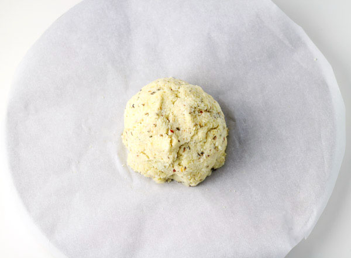
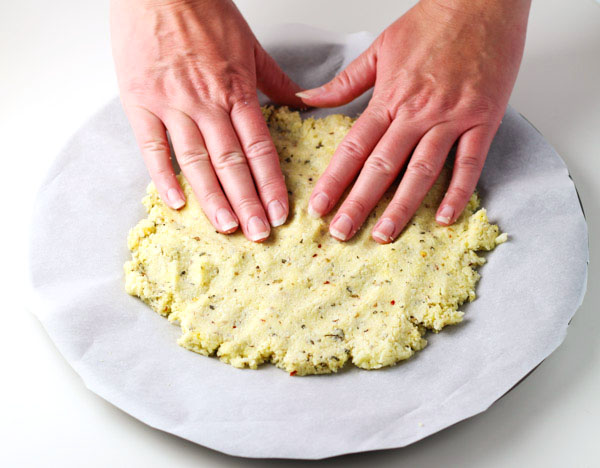
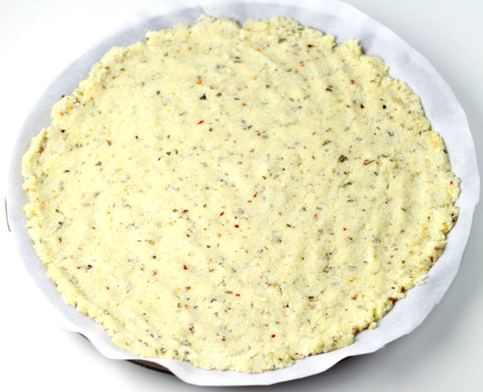
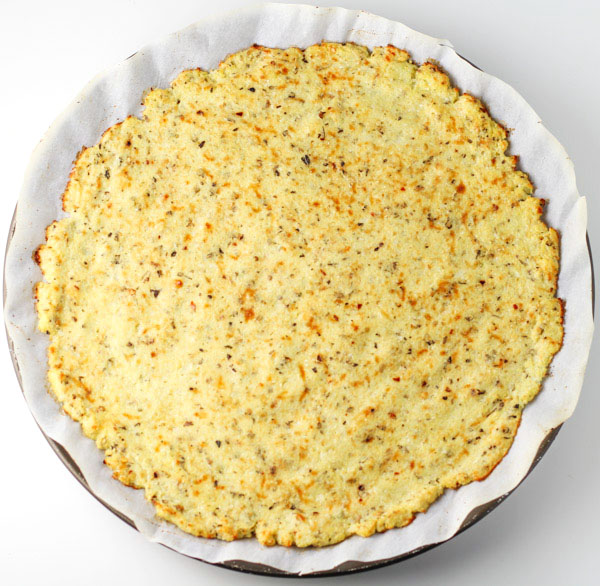

Back
Cauliflower Pizza Crust
Ingredients
- 1 head of cauliflower
- ¼ cup of mozzarella cheese
- ¼ cup of parmesan cheese
- ¼ tsp salt
- ½ tsp back pepper
- ¼ tsp red pepper flakes
- 1 tsp dried basil
- 1 tsp dried oregano
- ¼ tsp garlic salt (feel free to exclude)
- 1 whole egg
- 1 cheese cloth




Instructions
- Pre-heat oven to 450 degrees.
- Take one head of cauliflower, wash and chop up the florets.
- Place chopped cauliflower in a food processor, pulse for around 30 seconds until cauliflower looks like snow.
- Place cauliflower in a microwave safe bowl and heat for 2-3 minutes covered.
- Let it cool before the next step.
- Place cooked cauliflower in a cheese cloth and squeeze out as much water as you can.
- Add cauliflower to a medium size bowl.
- Add mozzarella, parmesan, salt, pepper, red pepper flakes, basil, oregano, and garlic salt.
- Stir together.
- Add egg and stir until blended together.
- Form cauliflower dough into a ball with your hands and place on parchment paper over a pizza pan.
- Spread the dough out to the edges of the pan.
- Bake 10-15 minutes until crust is golden brown.
- Then spread your favorite pizza sauce over crust.
- Add toppings of your choice and bake 5-10 minutes until cheese is bubbly.
Source